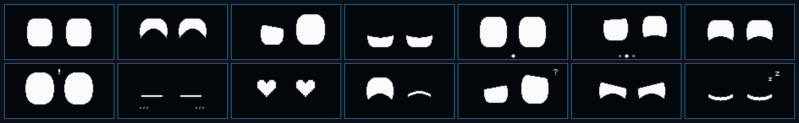

Guida completa all'Emotion & Reaction Engine (Personalità C — Molto espressivo), alle 14 espressioni OLED 128×64, agli stimoli prioritari, ai comportamenti spontanei e alla compatibilità tra PC Windows e futuro firmware ESP32-S3.
Le 14 espressioni OLED e l'EmotionEngine sono operativi
nel simulatore Python (04-Firmware/jarvis-desk-buddy-sim/) e nell'app
vocale Windows (05-Voice-AI/). Le nuove 7 espressioni saranno sincronizzate
sul firmware ESP32-S3 dopo il collaudo hardware fisico.
La Personalità C rende JARVIS un compagno da scrivania simpatico, giocherellone, tenero, curioso e occasionalmente birichino, capace di riposare quando non viene usato e di risvegliarsi con naturalezza, senza risultare mai invadente o rumoroso.
Il motore EmotionEngine (04-Firmware/jarvis-desk-buddy-sim/emotion_engine.py)
coordina in modo deterministico e non bloccante le reazioni visive ed eventuali brevi risposte
vocali, separando la logica emotiva dal rendering grafico EyeEngine e dal flusso
conversazionale VoiceController.
Alle 7 espressioni storiche del progetto si aggiungono 7 nuove espressioni ottimizzate per display monocromatico 128×64 con margini di sicurezza garantiti:

Riga 1: IDLE, HAPPY, CURIOUS, SLEEPY, LISTENING, THINKING, SPEAKING. Riga 2: SURPRISED, SHY, LOVE, WINK, CONFUSED, MISCHIEVOUS, SLEEPING.
| Espressione | Origine | Significato e Dettaglio Visivo |
|---|---|---|
IDLE | Core (7) | Sguardo rilassato con respiro lento, battito di ciglia e micro-sguardi |
HAPPY | Core (7) | Occhi arcuati dal sorriso con leggero rimbalzo verticale |
CURIOUS | Core (7) | Asimmetria tra i due occhi e leggero spostamento laterale |
SLEEPY | Core (7) | Palpebre superiori abbassate e battito lento |
LISTENING | Core (7) | Occhi ben aperti e indicatore pulsante centrale in basso |
THINKING | Core (7) | Sguardo laterale con 3 puntini animati di elaborazione |
SPEAKING | Core (7) | Apertura ritmica sincronizzata alla sintesi vocale Piper |
SURPRISED | FASE 7 | Occhi spalancati e simbolo ! in alto al centro |
SHY | FASE 7 | Sguardo abbassato con lieve dondolio e tratteggi di rossore |
LOVE | FASE 7 | Due cuori pixel-art pulsanti al posto delle pupille |
WINK | FASE 7 | Occhio sinistro aperto e occhio destro chiuso in occhiolino ad arco |
CONFUSED | FASE 7 | Palpebre asimmetriche e piccolo punto interrogativo ? |
MISCHIEVOUS | FASE 7 | Palpebre inclinate da sguardo furbetto e sorriso sornione |
SLEEPING | FASE 7 | Occhi chiusi rilassati con piccole zZ fluttuanti |
Ogni stimolo genera un StimulusEvent con priorità dedicata e cooldown individuale
per evitare ripetizioni eccessive. Le reazioni non si sovrappongono: uno stimolo più urgente
interrompe (preempt) una reazione meno prioritaria, mentre al termine della durata
JARVIS torna automaticamente allo stato precedente.
| Stimolo | Priorità | Cooldown | Reazione Principale |
|---|---|---|---|
TEMP_ERROR | 95 | 2,5 s | CONFUSED (errore STT, TTS o AI locale) |
WAKE_UP | 90 | 1,5 s | HAPPY + blink (risveglio da riposo) |
SUDDEN_NOISE | 85 | 6,0 s | SURPRISED (sobbalzo simulato) |
BUTTON_PRESS | 80 | 0,7 s | Ciclo giocoso HAPPY / WINK / CURIOUS / MISCHIEVOUS |
COMPLIMENT | 70 | 4,0 s | LOVE o SHY |
JOKE | 68 | 4,0 s | MISCHIEVOUS, WINK o HAPPY |
GREETING | 65 | 5,0 s | HAPPY o WINK |
REPLY_DONE | 55 | 1,2 s | HAPPY o WINK al termine risposta |
QUESTION | 45 | 1,8 s | CURIOUS |
HARD_ANSWER | 40 | 2,5 s | THINKING |
INACTIVITY | 20 | 10,0 s | SLEEPY → SLEEPING |
IDLE: a intervalli naturali (default 7,5 s), JARVIS esegue sguardi laterali con blink, brevi espressioni CURIOUS, rari WINK o occhiate MISCHIEVOUS.LISTENING, THINKING e SPEAKING i comportamenti spontanei vengono sospesi per non interferire con l'utente.SLEEPY; dopo 75 s entra in SLEEPING. Qualsiasi stimolo o interazione lo risveglia in IDLE.
Nel Simulatore OLED (simulator_gui.py) e nell'app unificata (jarvis_app.py)
è presente il pannello Emotion & Reaction Engine — Personalità C con:
Le 7 espressioni storiche (IDLE, HAPPY, CURIOUS,
SLEEPY, LISTENING, THINKING, SPEAKING)
sono già supportate sia sul simulatore PC sia sul firmware ESP32-S3. Le 7 nuove espressioni
di FASE 7 sono attualmente implementate su PC/Simulatore e documentate in
06-Hardware-Integration/USB_PROTOCOL.md per il futuro allineamento firmware
dopo la verifica PlatformIO e l'arrivo dei componenti fisici.